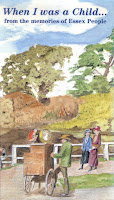
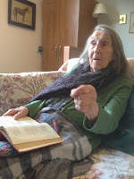
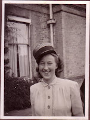

{kind=link}

Back in the mid-1980s when Mum was newly widowed and I was still a bookseller, she helped me select and arrange the stories that made up When I was a Child, my first book. They were not my stories or my childhood but were essays that had been contributed to the annual Age Concern Essex Essay Competition organised, since 1951, by Miss Kay Kidner of Essex Old People’s Welfare. Miss Kidner was rather a remarkable woman, daughter of a rhubarb farmer from Wisbech and a old-fashioned do-gooder.And what a good thing she had done, recognising as early as 1951 that the old people who she met in her professional capacity had valuable human stories to tell. I went to see Miss Kidner because I'd been feeling the lack of anything I could sell in my shop for my older customers, especially those whose eyesight might be failing. The Age Concern essays, all of them stored respectfully in the Essex Record Office, were a revelation and I immediately asked for permission to select and publish some of them, donating royalties to the charity. The contributors were happy and many expressed delight at seeing their names in a Book. Thirty years later the evidence of my utter lack of editorial skill, let alone understanding of the conventions of layout and capitalisation, makes me wince but that little book sold several thousand copies and made many people happy, including Mum and me. (And if you love the cover image - as I do - let me tell you it was painted by a lady approaching her 100th birthday who lived in the same farmhouse where she'd been born. I sometimes went to visit her there. She'd never married, everyone else was dead and her house was an extraordinary, unmodernised place; so dark it gave the impression of not having reached the era of electricity. Yet out of it came these fresh, delightful watercolours.)
.
{kind=link}
I remembered When I was a Child this week when I attended a training
course in Felixstowe, Suffolk, organised to help the carers of people with dementia do
“Life Story Work". This is intended as a positive activity, something interesting and affirmative for carers and people with dementia to do together. It gleans information about who the person was before they fell ill and thus helps facilitate best care for people when they can no
longer rationalise their own behaviours or communicate their wishes clearly. The training course is an imaginative project on behalf of the Felixstowe Book Festival
organisers who want to ensure that people with dementia, living in the various residential homes across the town, are not invisible to the rest of the community. There is a space in the Festival programme on the morning of July 1st where their lives (and the dedication of those who care for them) can be celebrated. I think I'm chairing it?
{kind=link}
I came away from the Life Story workshop full of enthusiasm and buoyed
up by the pleasure of a day in company of other dementia carers -- but still with very little idea how I was going to approach this project with Mum. I’m a
biographer, I’ve an interest in family history, social history -- I had loved the minute detail of life in When I was a Child -- "five-fingering" (using starfish for fertiliser) "blakeys" and "goffering irons", rabbits for Christmas lunch in the First World War. I published three more collections of the Age Concern essays after that first volume.
Yet I already knew that none of my usual approaches was likely to work. In the past Mum and I have had many conversations exploring her collection of old photos and her memories of her 1920s-30s childhood. But almost all of that recollection has now been wiped as her dementia has progressed. Her hearing, vision, word-finding are not only unpredictable but frequently distorted and what you might call the the content of her mind has gone. I had rather given up on those family history sessions finding the blankness of her memory depressing for us both -- distressing even. Mum’s often at a low ebb, indefinably unwell, disorientated and gripped by fear. She’s tired so even our walks are less regular and pleasurable. But we do need something that we can enjoy together -- so how should we approach "Life Story Work"?
Yet I already knew that none of my usual approaches was likely to work. In the past Mum and I have had many conversations exploring her collection of old photos and her memories of her 1920s-30s childhood. But almost all of that recollection has now been wiped as her dementia has progressed. Her hearing, vision, word-finding are not only unpredictable but frequently distorted and what you might call the the content of her mind has gone. I had rather given up on those family history sessions finding the blankness of her memory depressing for us both -- distressing even. Mum’s often at a low ebb, indefinably unwell, disorientated and gripped by fear. She’s tired so even our walks are less regular and pleasurable. But we do need something that we can enjoy together -- so how should we approach "Life Story Work"?
March 21st 2017 saw the publication of Excellent Dementia Care in Hospitals with a first chapter by Nicci Gerrard and I. Since then I’ve been reading the rest of the book and considering the
good counsel given by the outstanding dementia nurses from Imperial
College Healthcare who wrote it. Discover and use the patient’s strengths is their invariable advice -- and this same message was echoed by the Life Story trainers in Felixstowe. We need to discover what
it is that makes the person we care for feel happy and in touch with themselves -- then use it to enrich their lives and our own. With Mum I suppose her most obvious strength is her innate feeling for language (even when all words are blocked) and also her responsiveness to music -- rhythm, phrasing and tune. She has an alarmingly wide emotional range (which I suppose could be a strength if I could only keep her at the right end). She's relatively mobile and has a heightened sensitivity to touch.
{kind=link}

I still wasn't sure how this would help me help her make a life story -- until I remember that life stories are continuing narratives; they need not be set in the past. We're probably telling ourselves episodes of our own life stories every day that we live them. This is not necessarily a good thing for someone who is also living with dementia. Get Mum at the wrong time in almost any evening and she'll enact a terrifying saga of threat, conspiracy, oppression and impending violence -- all of which have her as the central victim (cf ABDUCTED AND INCARCERATED!! July 2016). So, I have to replace that nightmare autobiography with something more benign. Always remembering this is not my story of her, it must be her's of herself. As her factual ballast is so reduced, the tale of her current existence must be told by means of emotions. So, here's where books come in. Mum can't read and she can't really follow a prose narrative being read to her (with the honourable exception of Peter Rabbit) but stories in song or in poetry give her a chance to thrill and shudder and laugh in safety. She can live vicariously in a beautiful pea-green boat with "The Owl and the Pussycat" or go to sea in a sieve with "The Jumblies" She can take days out to the Camptown Races or march to the top of the hill with the Grand Old Duke of York.
It's a very limited range and on the really bad days nothing works at all. She covers her ears and shrinks away. Yet I feel that, now I have accepted that Mum's everyday story usually works better when her emotions are expressed though music and poetry (and drama), I may have understood something that will be quite useful to us both. I'm unlikely to learn about
the detail of her life but I may continue to learn about her personality. Anyway she can still surprise me. I thought she couldn't read at all but yesterday I took out a copy of When I Was a Child to lend to a mutual friend and she spotted her own name on the back cover "Was that me?" she asked.
Julia Jones is the co-author of Beloved Old Age and What To Do About It: Margery Allingham's The Relay
the detail of her life but I may continue to learn about her personality. Anyway she can still surprise me. I thought she couldn't read at all but yesterday I took out a copy of When I Was a Child to lend to a mutual friend and she spotted her own name on the back cover "Was that me?" she asked.
{kind=link}

I always shy away from any mention of The War but somehow we found a set of photos from the time when her family's big house was used as a convalescent home and somewhere for Allied soldiers to come and spend their leave. There was another surprise. Instead of telling me her usual traumatised tales of bombs and killing and hatred she suddenly allowed herself to mention that the visiting servicemen had had fun. There were Australians, Canadians, New Zealanders, Poles and Free French filling her home and it seems she may have had fun as well. She pointed at a photo of a jolly-looking 16 year old wearing a hat that clearly didn't belong to her; "That was me", she said.Julia Jones is the co-author of Beloved Old Age and What To Do About It: Margery Allingham's The Relay